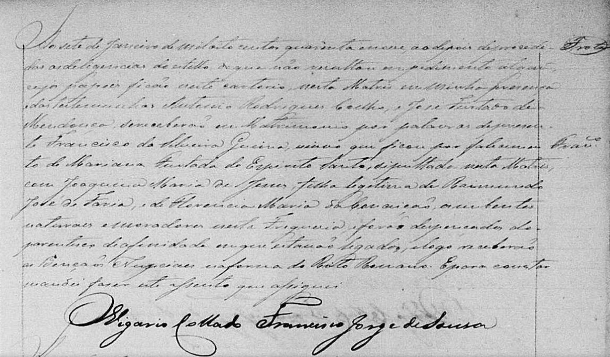

📜 Provas Documentais da Nossa História
Registros originais da Paróquia de Sobral que comprovam a união de nossas linhagens em 1849.
Matrimônio: Inocêncio de Lima Menezes e Teodorica Maria de Lima

(Clique na imagem para ampliar)
"Aos oito de Janeiro de mil oitocentos e quarenta e nove, nesta Matriz de Sobral... Inocêncio de Lima Menezes, filho legítimo de Vicente Ferreira de Lima e Antônia Alves Linhares; com Teodorica Maria de Lima, filha legítima de Felipe Teles de Menezes e Constança Maria... moradores nesta Freguesia... se receberam por marido e mulher..."
O Vigário Francisco de Assis
Matrimônio: Antônio Marques de Souza e Floripes Maria da Encarnação

(Clique na imagem para ampliar)
"Aos onze de Janeiro de mil oitocentos e quarenta e nove, nesta Matriz de Sobral... Antônio Marques de Souza, filho legítimo de José Marques de Souza e Maria Joaquina; com Floripes Maria da Encarnação, filha legítima de Antônio Manoel do Espírito Santo e Anna Joaquina... dispensados do impedimento de consanguinidade lateral..."
O Vigário Francisco de Assis
Inventário de José Teles de Menezes (1897)

(Clique na imagem para ampliar)
Documento fundamental que descreve a sucessão de bens e confirma a filiação de Joaquim Tolentino de Menezes e Maria Francisca de Menezes, mantendo a integridade do patrimônio familiar no Ceará.